Kapital 6 Bearbejdning - tidyverse dag 2

“Fejl ved brug af utilstrækkelige data er meget mindre end når man ikke bruger nogen data overhovedet.” – Charles Babbage
6.1 Introduktion og læringsmålene
I dag fortsætter vi arbejdet med tidyverse. Vi fokuserer især på pakkerne dplyr og tidyr, som kan bruges til at ændre strukturen af et datasæt. Det hjælper blandt andet med at tilpasse data til den krævede struktur for at lave plots med ggplot2.
I biologi er det ofte tilfældet at dataene er i een dataframe mens yderligere oplysninger om prøverne er i en anden dataframe. Derfor vil vi gerne lære, hvordan man forbinder disse dataframes i R. At integrere datasæt hjælper med visualisering af ekstra informationer i jeres plots.
6.1.1 Læringsmålene
Du skal kunne:
- Bruge kombinationen af
group_by()ogsummarise(). - Forstå forskellen mellem
wideoglongdata og brugepivot_longer()til at lette plotting. - Bruge
left_join()eller andre join-funktioner til at tilføje prøveinformation til datasættet.
- Se videoerne
- Lav quiz på Absalon (‘tidyverse - dag 2’)
- Lav problemstillingerne
6.1.2 Videoer
- Video 1: Kombination af
group_by()ogsummarise(). Forbindetidyverseogggplot2kode sammen via%>%/+.
- Video 2: Wide/long dataformat,
pivot_longer()og deres brug i ggplot2.
- Video 3:
titanicsummary statistics eksempel.
- Video 4:
left_join()for at forbinde tabeller med ekstra oplysninger.
6.2 Kombinationen af group_by() og summarise() i dplyr-pakken
Ved at kombinere group_by() og summarise() kan man finde numeriske svar på spørgsmålet: Havde mænd eller kvinder en højere sandsynlighed for at overleve tragedien?
Lad os starte med at se på en løsning med tapply, hvor vi udregner proportionen af mænd og kvinder der overlevede. Følgende kode opdeler variablen Survived efter den kategoriske variabel Sex og tager det aritmetiske gennemsnit. Dermed får vi proportionen af overlevende efter køn. Vi kan beregne gennemsnittet på den måde, fordi 1 betyder at man overlevede, 0 betyder at man ikke overlevede og at man kan anvende disse numeriske værdier matematisk.
titanic_clean <- titanic %>%
select(-Cabin) %>%
drop_na()
#tapply løsning
tapply(titanic_clean$Survived,titanic_clean$Sex,mean)## female male
## 0.7547893 0.2052980Nu skifter vi over til en tidyverse-løsning. Lad os tage udgangspunkt i summarise()-funktionen. Vi vil beregne en variabel, som hedder “medianFare” og som er identisk med median(Fare).
## # A tibble: 1 × 1
## medianFare
## <dbl>
## 1 15.7Vi får faktisk en ny dataframe her med kun den variabel vi lige har specificeret. Vi er dog interesseret i proportionen af overlevende, så vi tager gennemsnittet af variablen Survived. Lad os gøre det med summarise():
## # A tibble: 1 × 1
## meanSurvived
## <dbl>
## 1 0.406For at besvare spørgsmålet er vi også nødt til at opdele efter kolonnen Sex. Vi kan bruge kombinationen af group_by() og summarise(). Vi opdeler efter Sex ved at anvende funktionen group_by() og derefter bruger vi summarise() til at oprette en kolonne, der hedder meanSurvived, som viser proportionen af overlevende for både kvinder og mænd.
## # A tibble: 2 × 2
## Sex meanSurvived
## <chr> <dbl>
## 1 female 0.755
## 2 male 0.205Lad os tage resultatet fra ovenstående kode chunk og visualisere det i et barplot / sølediagram:
titanic_clean %>%
group_by(Sex) %>%
summarise(meanSurvived = mean(Survived)) %>%
ggplot(aes(x = Sex, y = meanSurvived, fill = Sex)) +
geom_bar(stat = "identity",show.legend = FALSE) +
theme_minimal()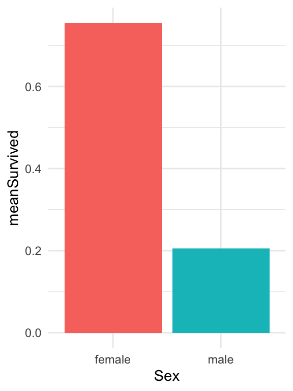
6.2.1 Reference af summarise()-funktioner
Her er nogle funktioner, som man ofte bruger med summarise() (der er mange andre muligheder).
| Funktion | Beskrivelse |
|---|---|
mean() |
beregner gennemsnittet af en variabel (i en gruppe). |
sd() |
beregner standardafvigelsen af en variabel (i en gruppe). |
min() |
finder den laveste værdi af en variabel (i en gruppe). |
max() |
finder den højeste værdi af en variabel (i en gruppe). |
n() |
taler observationer i en gruppe eller variabel. |
first() |
vælger den første værdi af en variabel (i en gruppe). |
6.2.2 Flere summeringsstatistikker på én gang
Vi kan også lave flere summeringsstatistikker på én gang. F.eks. kan vi anvende funktionen group_by med Sex igen, men beregne flere forskellige summeringsstatistikker:
titanic_clean_summary_by_sex <- titanic_clean %>%
group_by(Sex) %>%
summarise(count = n(), #count
meanSurvived = mean(Survived), #middelværdi survived
meanAge = mean(Age), #middelværdi age
propFirst = sum(Pclass==1)/n()) #proportionen i første klass
titanic_clean_summary_by_sex## # A tibble: 2 × 5
## Sex count meanSurvived meanAge propFirst
## <chr> <int> <dbl> <dbl> <dbl>
## 1 female 261 0.755 27.9 0.326
## 2 male 453 0.205 30.7 0.223Denne summeringstabel kan bruges igen som et datasæt til at lave et diagram med ggplot2. Bemærk, at her bruger vi stat="identity", fordi vi skal ikke tælle observationerne op længere, men bare plotte præcis de tal som allerede er i dataframen. I nedenstående eksempel laver vi søjlediagrammer for meanAge og propFirst. De er plottet ved hjælp af to forskellige ggplot-kommandoer og ved siden af hinanden ved hjælp af en funktion kaldet grid.arrange() fra R-pakken gridExtra.
plotA <- ggplot(data=titanic_clean_summary_by_sex,aes(x=Sex,y=meanAge,fill=Sex)) +
geom_bar(stat="identity",show.legend = FALSE) +
theme_minimal()
plotB <- ggplot(data=titanic_clean_summary_by_sex,aes(x=Sex,y=propFirst,fill=Sex)) +
geom_bar(stat="identity",show.legend = FALSE) +
theme_minimal()
library(gridExtra)
grid.arrange(plotA,plotB,ncol=2) #plot both together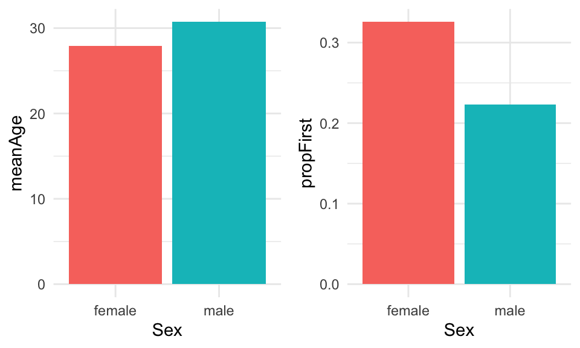
Vi kan se at kvinder var i gennemsnit lidt yngre end mænd og havde en højere sandsynlighed for at være i første klasse.
Et interessant spørgsmål er, hvordan man kan lave de ovenstående plots uden at bruge to forskellige ggplot-kommandoer. Med andre ord, hvordan man kan lave en automatisk løsning, hvor vi kan plotte flere summeringsstatistikker med kun én ggplot-kommando. Vi kommer til at se senere hvordan det kan gøres ved først at konvertere datasættet til long-formatet.
6.2.3 Mere avanceret group_by()
Lad os også beregne, hvor mange passagerer der var, efter deres klasse og steden hvor de gik ombord på skibet:
titanic_clean %>%
group_by(Embarked, Pclass) %>% # Grupper efter flere variable...
summarise(count = n(), .groups="keep")## # A tibble: 10 × 3
## # Groups: Embarked, Pclass [10]
## Embarked Pclass count
## <chr> <int> <int>
## 1 "" 1 2
## 2 "C" 1 74
## 3 "C" 2 15
## 4 "C" 3 41
## 5 "Q" 1 2
## 6 "Q" 2 2
## 7 "Q" 3 24
## 8 "S" 1 108
## 9 "S" 2 156
## 10 "S" 3 290Man kan se, at størstedelen gik ombord i Southampton (S), men der var også forholdsvis mange førsteklasses-passagerer, der gik ombord i Cherbourg (C). Lad os fortsætte med vores Survived-eksempel og beregne proportionen af overlevende efter de tre variabler Adult, Sex og Pclass.
titanic_clean_summary_survived <- titanic_clean %>%
mutate(Adult = ifelse(Age>=18,"Adult","Child")) %>%
group_by(Adult,Sex,Pclass) %>%
summarise(meanSurvived = mean(Survived), .groups="keep")
titanic_clean_summary_survived## # A tibble: 12 × 4
## # Groups: Adult, Sex, Pclass [12]
## Adult Sex Pclass meanSurvived
## <chr> <chr> <int> <dbl>
## 1 Adult female 1 0.974
## 2 Adult female 2 0.903
## 3 Adult female 3 0.418
## 4 Adult male 1 0.371
## 5 Adult male 2 0.0682
## 6 Adult male 3 0.133
## 7 Child female 1 0.875
## 8 Child female 2 1
## 9 Child female 3 0.543
## 10 Child male 1 1
## 11 Child male 2 0.818
## 12 Child male 3 0.233Vi kan også visualisere resultatet i en ggplot med at kombinere de tre variabler og opdeler de i tre plots efter Pclass:
ggplot(titanic_clean_summary_survived,aes(x=Sex,y=meanSurvived,fill=Adult)) +
geom_bar(stat="identity",position = "dodge") +
facet_grid(~Pclass) +
ylab("Proportion survived") +
theme_bw()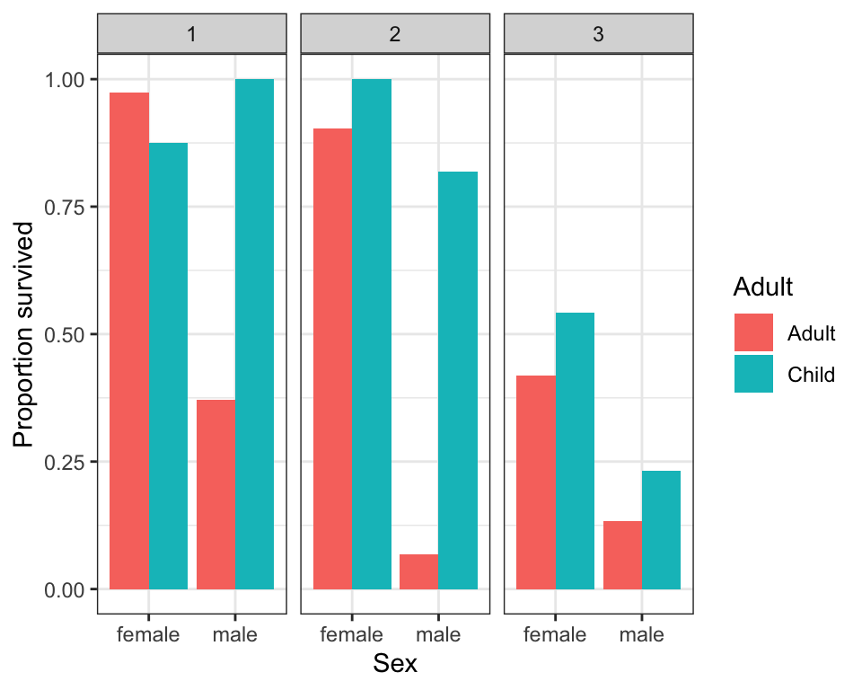
6.2.4 Funktionen ungroup()
Nogle gange, når man er færdig med analysen, men gerne vil arbejde videre med et datasæt, er det nyttigt at anvende ungroup() på datasættet igen. Det er mest relevant i længere projekter. F.eks., vi kan se på følgende kode, hvor der står “Groups: Adult [2]” øverst i den nye dataframe med summeringsstatistikker:
titanic_clean_summary <- titanic_clean %>%
mutate(Adult = ifelse(Age>=18,"Adult","Child")) %>%
group_by(Adult,Sex) %>%
summarise(meanSurvived = mean(Survived), .groups = "drop_last")
titanic_clean_summary## # A tibble: 4 × 3
## # Groups: Adult [2]
## Adult Sex meanSurvived
## <chr> <chr> <dbl>
## 1 Adult female 0.772
## 2 Adult male 0.177
## 3 Child female 0.691
## 4 Child male 0.397Bemærk at vi først brugte group_by() på både Adult og Sex. Men hver gang man laver en beregning, fjernes én opdeling - i dette tilfælde opdeles der ikke længere efter Sex, men der opdeles stadig efter Adult. Det er ikke et problem, hvis vi ikke vil arbejde videre med dataframen. Men hvis vi gerne vil beregne den maksimale chance for overlevelse ud fra de fire beregnede tal (ikke opdele efter en kategorisk variabel), så dropper vi group_by():
## # A tibble: 2 × 2
## Adult maxChance
## <chr> <dbl>
## 1 Adult 0.772
## 2 Child 0.691Man kan dog se, at outputtet er blevet opdelt efter variablen Adult. For at undgå dette skal man først anvende ungroup(), så effekten af group_by() fjernes.
## # A tibble: 1 × 1
## maxChance
## <dbl>
## 1 0.7726.3 pivot_longer()/pivot_wider() fra tidyr-pakken
Tidy data findes i to former: wide data og long data. Det kan være nyttigt at transformere data fra én form til en anden, f.eks. for at lave et bestemt plot med ggplot2-pakken. Pakken tidyr indeholder funktioner, der kan bruges til at lave disse transformationer.
Før vi begynder at se lidt nærmere på tidyr, skal vi beskrive hvad long data og wide data betyder.
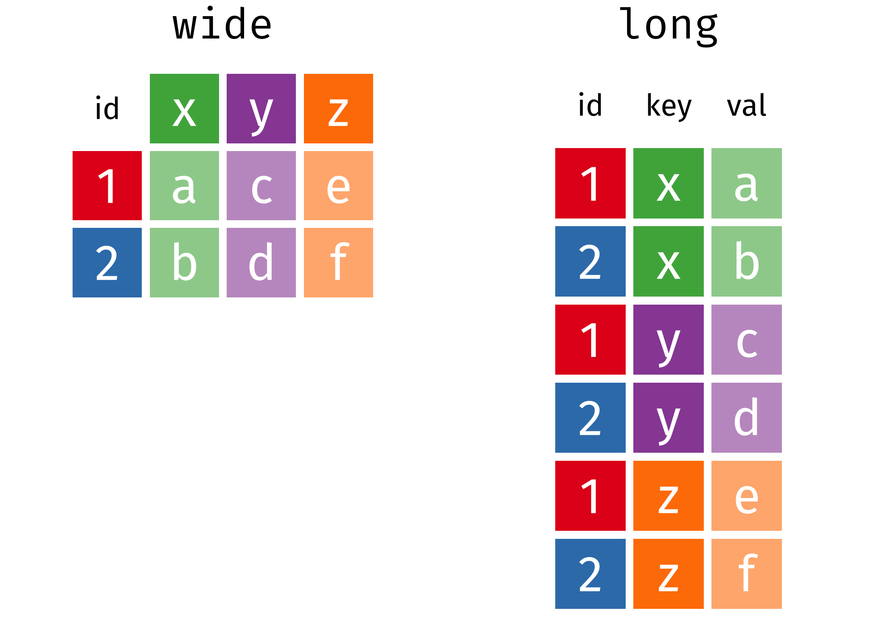
Figure 6.1: source: https://www.garrickadenbuie.com/project/tidyexplain/
Wide data: Her har man én kolonne for hver variabel og én række for hver observation. Dette gør dataene lette at forstå, og denne datatype findes ofte indenfor biologi - f.eks. hvis man har forskellige prøver (behandlinger, kontroller, betingelser osv.) som variabler.
Long data: Med long data har man værdier samlet i en enkelt kolonne og en kolonne som en slags nøgle, der også angiver, hvilken variabel hver værdi hørte til i det wide format. Datasættet betragtes stadig som tidy, men informationen opbevares på en anden måde. Det er lidt sværere at læse, men nemmere at arbejde med, når man analyserer dataene.
Når man transformerer data fra wide til long eller omvendt, kaldes det for reshaping.
6.3.1 Oversigt over tidyr pakken
Her er en oversigt over de fire vigtigste funktioner fra R-pakken tidyr. Vi fokuserer mest på pivot-funktionerne, men det kan være nyttigt at bruge separate og unite.
tidyr funktion |
Beskrivelse |
|---|---|
pivot_longer() |
reshape data fra wide til long |
pivot_wider() |
reshape data fra long til wide |
separate() |
opdele strenge fra én kolonne til to |
unite() |
føje strenge sammen fra to til én kolonne |
6.3.2 Reshape data fra wide til long med pivot_longer()
Lad os arbejde med datasættet iris. Man får iris i long format med følgende kommando: Her vil man gerne tage alle numeriske kolonner og placere deres værdier i en enkelt kolonne value (med en nøglekolonne name til at adskille mellem de forskellige variabler).
## # A tibble: 600 × 3
## Species name value
## <fct> <chr> <dbl>
## 1 setosa Sepal.Length 5.1
## 2 setosa Sepal.Width 3.5
## 3 setosa Petal.Length 1.4
## 4 setosa Petal.Width 0.2
## 5 setosa Sepal.Length 4.9
## 6 setosa Sepal.Width 3
## 7 setosa Petal.Length 1.4
## 8 setosa Petal.Width 0.2
## 9 setosa Sepal.Length 4.7
## 10 setosa Sepal.Width 3.2
## # ℹ 590 more rowsAt beholde numeriske kolonner svarer i dette tilfælde til at man ikke vil have variablen Species med i den enkelte kolonne:
## # A tibble: 600 × 3
## Species name value
## <fct> <chr> <dbl>
## 1 setosa Sepal.Length 5.1
## 2 setosa Sepal.Width 3.5
## 3 setosa Petal.Length 1.4
## 4 setosa Petal.Width 0.2
## 5 setosa Sepal.Length 4.9
## 6 setosa Sepal.Width 3
## 7 setosa Petal.Length 1.4
## 8 setosa Petal.Width 0.2
## 9 setosa Sepal.Length 4.7
## 10 setosa Sepal.Width 3.2
## # ℹ 590 more rowsHer er et billede, der illustrerer wide- og long-formatet med datasættet iris:
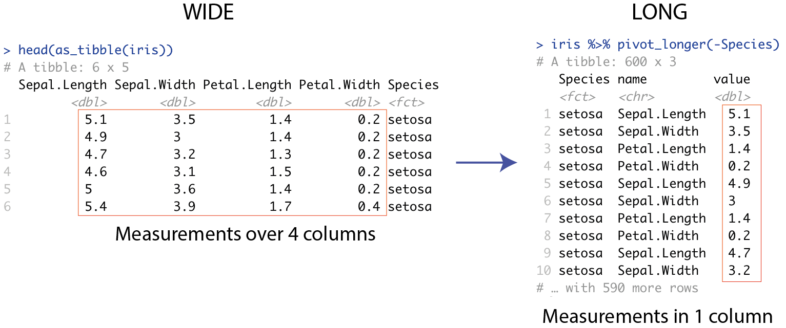
Figure 6.2: wide til long med Iris
Til venstre har vi målingerne i datasættet fordelt over fire forskellige kolonner kaldet Sepal.Length, Sepal.Width, Petal.Length og Petal.Width, samt en ekstra kolonne, der adksiller mellem de tre Species. Til højre har vi samlet alle målingerne i en enkelt kolonne kaldet values, og så bruger vi en anden ‘nøgle’ kolonne kaldet name til at fortælle om det er en måling for Sepal.Length eller Sepal.Width osv.
Jeg kan ændre kolonnenavne for målingerne og nøglen til noget andet end standardnavnene. I den nedenstående eksempel skal målingerne hedde measurements og nøglen trait:
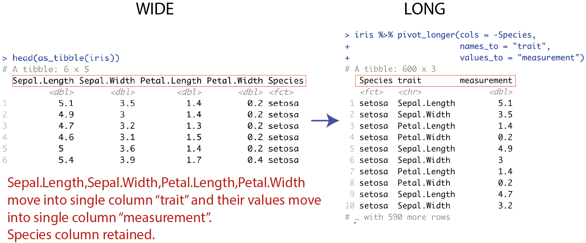
F.eks. kan man bruge long formatet til at visualisere alle mulige boxplots opdelt efter Species og trait i samme plot:
ggplot(iris.long,aes(y=measurement,x=Species,fill=Species)) +
geom_boxplot() +
facet_grid(~trait) +
theme_bw()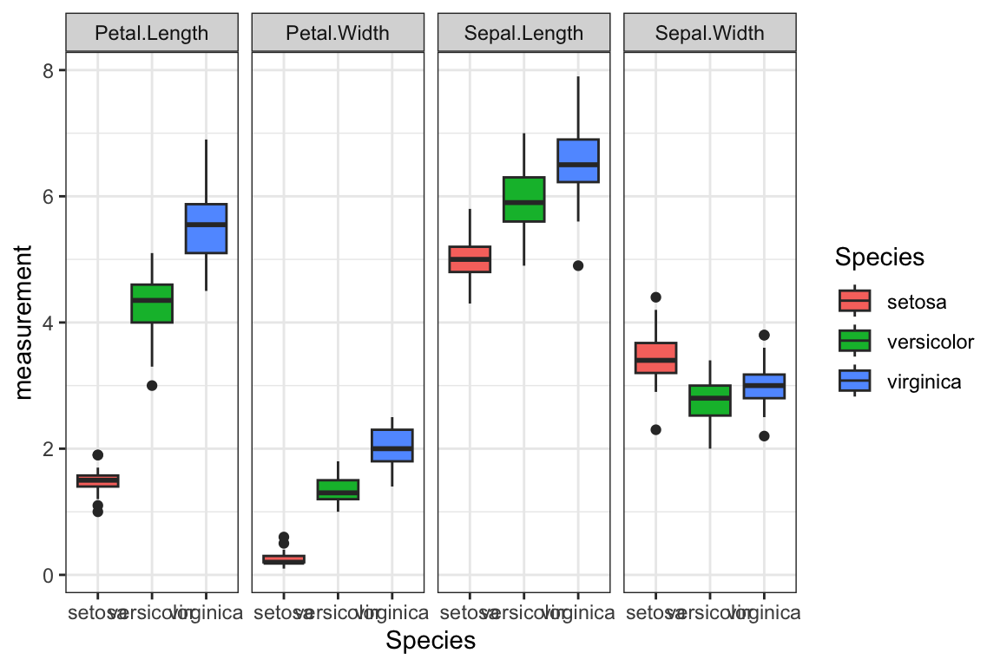
6.3.3 separate()
Funktionen separate() fra pakken tidyr kan bruges til at opdele to informationer, som eksisterer i samme kolonne. F.eks., datasættet iris har variabler med navne Sepal.Width, Sepal.Length osv. - man kan opdele disse navne over to kolonner i stedet for - f.eks. “Sepal” og “Width” i tilfældet af Sepal.Width. I nedenstående kode chunk kan man se, hvordan man bruger separate().
iris %>%
pivot_longer(cols = -Species, names_to = "trait", values_to = "measurement") %>%
separate(col = trait, into = c("part", "measure"), sep = "\\.") %>%
head()## # A tibble: 6 × 4
## Species part measure measurement
## <fct> <chr> <chr> <dbl>
## 1 setosa Sepal Length 5.1
## 2 setosa Sepal Width 3.5
## 3 setosa Petal Length 1.4
## 4 setosa Petal Width 0.2
## 5 setosa Sepal Length 4.9
## 6 setosa Sepal Width 3Man specificerer variablen trait og angiver, at den skal opdeles i de to variabler part og measure. Vi angiver sep = "\\.", hvilket betyder, at vi vil gerne have part som delen af trait foran ‘.’ og measure som delen af trait efter .. Vi bruger “\.” for at fortælle, at vi er interesseret i punktummet og ikke en “anonym karakter”, som punktum normalt betyder i “streng”-sprog. Man behøver faktisk ikke at specificere sep = "\\." i dette tilfælde - som standard kigger funktionen efter ‘non-character’ tegn og bruger dem til at lave opdelingen.
Sammenligne resultatet af den sidste kode chunk med den følgende:
iris %>%
pivot_longer(cols = -Species, names_to = "trait", values_to = "measurement") %>%
separate(col = trait, into = c("part", "measure")) %>%
head()## # A tibble: 6 × 4
## Species part measure measurement
## <fct> <chr> <chr> <dbl>
## 1 setosa Sepal Length 5.1
## 2 setosa Sepal Width 3.5
## 3 setosa Petal Length 1.4
## 4 setosa Petal Width 0.2
## 5 setosa Sepal Length 4.9
## 6 setosa Sepal Width 3Brug resultatet i et plot:
iris %>%
pivot_longer(cols = -Species, names_to = "trait", values_to = "measurement") %>%
separate(col = trait, into = c("part", "measure")) %>%
ggplot(aes(y=measurement,x=part,fill=part)) +
geom_boxplot() +
facet_grid(~measure) +
theme_bw()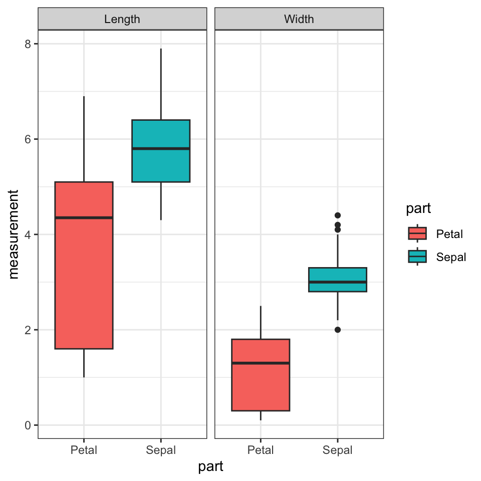
Se også unite() som gøre det modsatte til separate().
6.4 Eksempel: Titanic opsummeringsstatistikker
Her er et eksempel med datasættet titanic, der inddrager mange af de tidyverse-koncepter, vi har lært indtil videre.
group_by()ogsummarise()
Vi producerer vores opsummeringsstatistikker som tidliger.
titanic_clean_summary_by_sex <- titanic_clean %>%
group_by(Sex) %>%
summarise(count = n(),
meanSurvived = mean(Survived),
meanAge = mean(Age),
propFirst = sum(Pclass == 1) / n())
titanic_clean_summary_by_sex## # A tibble: 2 × 5
## Sex count meanSurvived meanAge propFirst
## <chr> <int> <dbl> <dbl> <dbl>
## 1 female 261 0.755 27.9 0.326
## 2 male 453 0.205 30.7 0.223pivot_longer()
Vi transformerer eller reshape dataframen fra wide data til long data. Vi vil samle kun de numeriske opsummeringsstatistikker i en enkelt kolonne, så variablen Sex skal ikke inddrages.
## # A tibble: 8 × 3
## Sex name value
## <chr> <chr> <dbl>
## 1 female count 261
## 2 female meanSurvived 0.755
## 3 female meanAge 27.9
## 4 female propFirst 0.326
## 5 male count 453
## 6 male meanSurvived 0.205
## 7 male meanAge 30.7
## 8 male propFirst 0.223ggplot()medfacet_wrap()
Vi kombinerer pivot_longer() med et plot af vores opsummeringsstatistikker og benytter facet_grid() til at adskille de forskellige statistikker.
titanic_clean_summary_by_sex %>%
pivot_longer(cols = -Sex) %>%
ggplot(aes(x = Sex, y = value, fill = Sex)) +
geom_bar(stat = "identity") +
facet_grid(~name) +
theme_bw() +
theme(aspect.ratio = 1)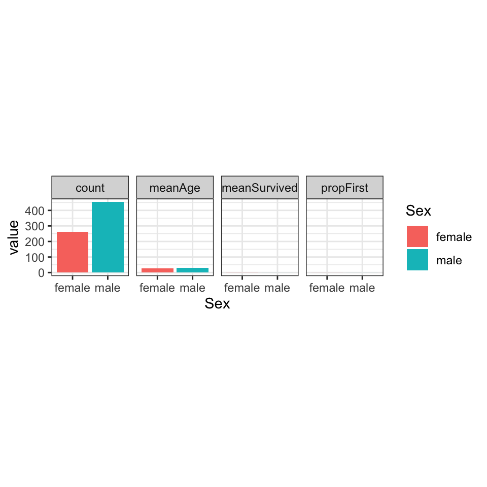
facet_wrap()
Vi laver det samme som før, men specificerer facet_wrap() i stedet for facet_grid(). Indenfor facet_wrap() kan man bruge indstillingen scales="free", som gør, at de fire plots får hver deres egne aksegrænser.
titanic_clean_summary_by_sex %>%
pivot_longer(cols=-Sex) %>%
ggplot(aes(x=Sex,y=value,fill=Sex)) +
geom_bar(stat="identity") +
facet_wrap(~name,scales="free",ncol=4) +
theme_bw() +
theme(aspect.ratio = 1)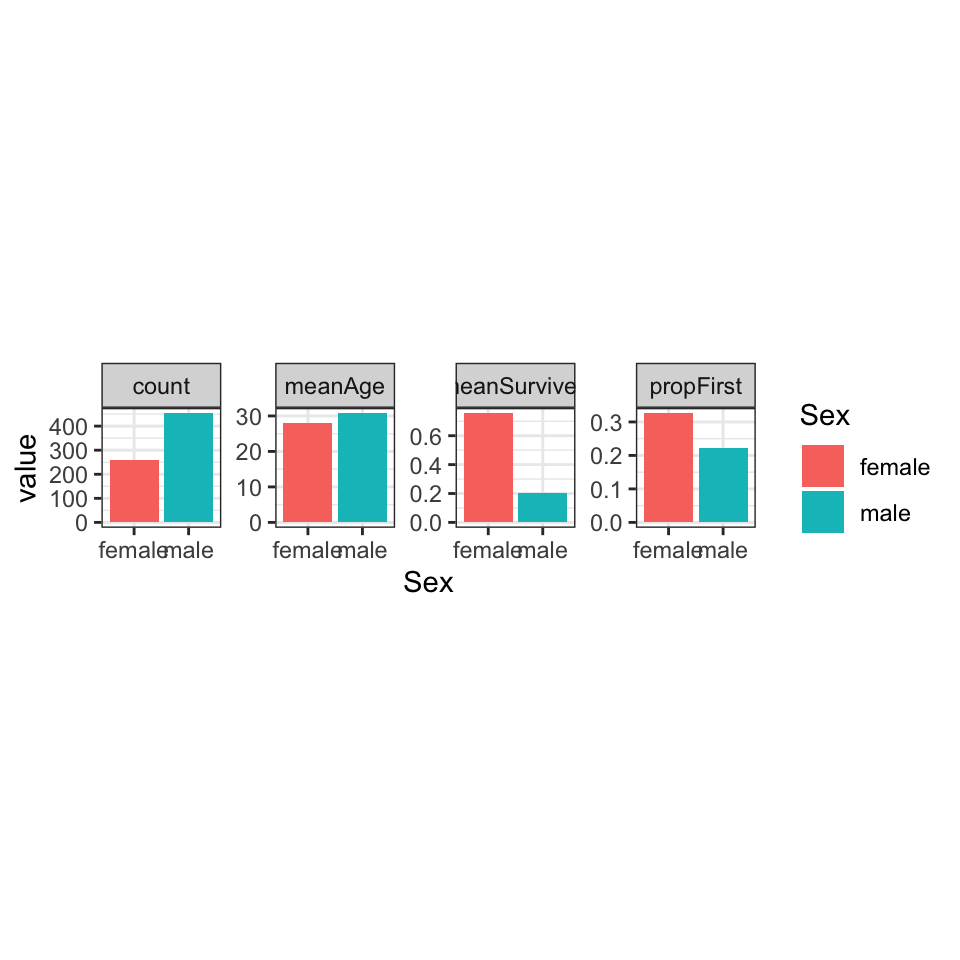
6.4.1 pivot_wider()
Hvordån skifter man fra long til wide formatet?
- Wide -> Long
- Long -> Wide
## # A tibble: 2 × 5
## Sex count meanSurvived meanAge propFirst
## <chr> <dbl> <dbl> <dbl> <dbl>
## 1 female 261 0.755 27.9 0.326
## 2 male 453 0.205 30.7 0.223Parametrene er:
names_from- nøglekolonne, som vil blive opdelt i flere kolonner i den nye dataframevalues_from- værdikolonne, som vil blive fordelt på tværs af de nye kolonner
6.5 left_join(): forbinde dataframes
Vi tager udgangspunkt i følgende to dataframes:
gene_table <- as_tibble(read.table("https://www.dropbox.com/s/6ll8ezrskly8joi/mouse_2gene_expr.txt?dl=1",header=T))
coldata <- as_tibble(read.table("https://www.dropbox.com/s/jlrszakmqlnmu2m/bottomly_phenodata.txt?dl=1"))Lad os først kigge på datasættet gene_table, som viser genekspressionsmålinger over forskellige prøver fra mus.
## # A tibble: 3 × 22
## gene SRX033480 SRX033488 SRX033481 SRX033489 SRX033482 SRX033490 SRX033483
## <chr> <dbl> <dbl> <dbl> <dbl> <dbl> <dbl> <dbl>
## 1 ENSMUSG… 158. 182. 119. 155. 167. 164. 180.
## 2 ENSMUSG… 143. 118. 91.6 106. 157. 95.1 131.
## 3 ENSMUSG… 132. 117. 100. 116. 88.1 125. 124.
## # ℹ 14 more variables: SRX033476 <dbl>, SRX033478 <dbl>, SRX033479 <dbl>,
## # SRX033472 <dbl>, SRX033473 <dbl>, SRX033474 <dbl>, SRX033475 <dbl>,
## # SRX033491 <dbl>, SRX033484 <dbl>, SRX033492 <dbl>, SRX033485 <dbl>,
## # SRX033493 <dbl>, SRX033486 <dbl>, SRX033494 <dbl>Man kan se, at der er 22 kolonner i datasættet - én der refererer til gener og 21 som indikerer forskellige prøver fra eksperimentet. Men det er ikke klart, hvad den enkelte prøve egentlig er. Lad os derfor kigge på de prøveoplysninger, som kan være nyttige at inddrage i vores analyse/plots for at undersøge eventuelle batcheffekter osv.
## # A tibble: 21 × 5
## sample num.tech.reps strain batch lane.number
## <chr> <int> <chr> <int> <int>
## 1 SRX033480 1 C57BL.6J 6 1
## 2 SRX033488 1 C57BL.6J 7 1
## 3 SRX033481 1 C57BL.6J 6 2
## 4 SRX033489 1 C57BL.6J 7 2
## 5 SRX033482 1 C57BL.6J 6 3
## 6 SRX033490 1 C57BL.6J 7 3
## 7 SRX033483 1 C57BL.6J 6 5
## 8 SRX033476 1 C57BL.6J 4 6
## 9 SRX033478 1 C57BL.6J 4 7
## 10 SRX033479 1 C57BL.6J 4 8
## # ℹ 11 more rowsMan kan se detaljerede oplysninger om de 21 prøver, blandt andet den stamme af mus prøven stammer fra og dens batch. Her refererer batch til de forskellige omstændigheder eller tidspunkter, hvor prøverne blev samlet. Hvis man er interesseret i, om der er en forskel i ekspressionsniveau mellem de to stammer (strains), kan det være nødvendigt at kontrollere efter batch for at sikre, at forskellen skyldes strain og ikke tekniske effekter på grund af batch.
6.5.1 left_join() fra dplyr-pakken
Funktionen left_join() er en del af pakken dplyr, som vi har arbejdet meget med indtil videre i kurset.
| funktion | Beskrivelse (kopieret) |
|---|---|
left_join() |
Tilføj matchende rækker fra en anden tabel til den første |
right_join() |
Tilføj matchende rækker fra den første tabel til den anden |
inner_join() |
Sammenføj to tabeller og returner alle rækker, der er til stede i begge |
full_join() |
Sammenføj data med alle rækker til stede |
Vi fokuserer her på funktionen left_join(), men vi kigger også på de øvrige funktioner i problemstillingerne nedenfor. Her er en grafisk demonstration af left_join() (kilde: https://mgimond.github.io/ES218/Week03c.html):
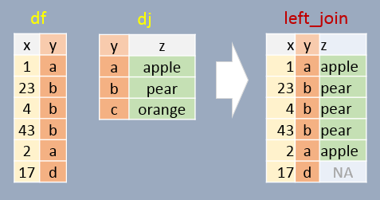
Det særlige ved left_join i forhold til de andre funktioner er, at left_join bevarer samtlige data i den første dataframe - det vil sige df i ovenstående billede. Det gælder også selvom d ikke matcher med en frugt i dj. I ovenstående genekspressionseksempel betyder det, at man bevarer alle målinger i gene_table, uanset om der er oplysninger om deres pågældende prøver.
6.5.2 Anvend left_join() på vores datasæt.
Ligesom man matcher kolonnen y i df og dj i ovenstående eksempel, skal vi også have en kolonne, vi kan matche. Vi vil gerne bruge kolonnen sample fra sample_info til at sammenligne med de forskellige prøvenavne i gene_table. Men først er vi nødt til at lave gene_table om til long-formatet, således at prøvenavne fremgår i en enkelt kolonne, sample (der kan bruges i left_join).
gene_table_long <- gene_table %>%
pivot_longer(cols = -gene,
names_to = "sample",
values_to = "expression")
gene_table_long## # A tibble: 63 × 3
## gene sample expression
## <chr> <chr> <dbl>
## 1 ENSMUSG00000006517 SRX033480 158.
## 2 ENSMUSG00000006517 SRX033488 182.
## 3 ENSMUSG00000006517 SRX033481 119.
## 4 ENSMUSG00000006517 SRX033489 155.
## 5 ENSMUSG00000006517 SRX033482 167.
## 6 ENSMUSG00000006517 SRX033490 164.
## 7 ENSMUSG00000006517 SRX033483 180.
## 8 ENSMUSG00000006517 SRX033476 263.
## 9 ENSMUSG00000006517 SRX033478 276.
## 10 ENSMUSG00000006517 SRX033479 328.
## # ℹ 53 more rowsDerefter kan vi tilføje oplysningsdata fra sample_info. Her angiver vi by = "sample" fordi det er navnet af kolonnen vi vil gerne bruge til at forbinde de to dataframes og fordi det er med i begge dataframes.
Efter vi forenede de to dataframes, kan man inddrage de ekstra oplysninger vi tilføjede i et plot. Her laver vi et plot med en farve til hver stamme og et plot med en farve til hver batch.
gg2 <- data_join %>%
ggplot(aes(y=expression,x=as.factor(strain),fill=gene)) +
geom_boxplot() +
facet_wrap(~gene,scales="free") +
theme_minimal() +
theme(legend.position = "none") +
ggtitle("Expression split according to strain")
gg2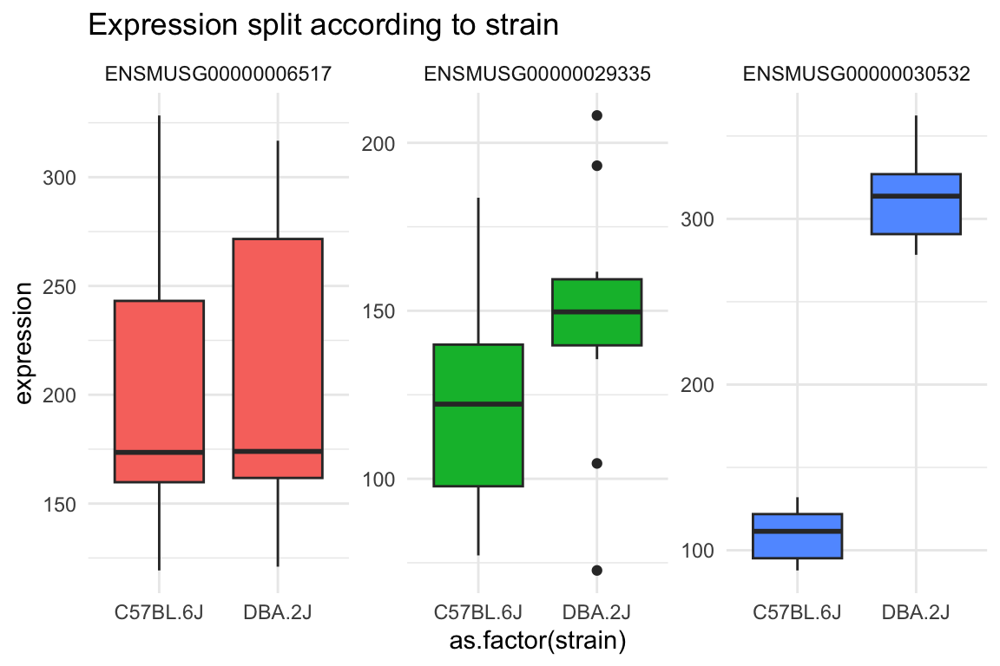
gg1 <- data_join %>%
ggplot(aes(y=expression,x=as.factor(batch),fill=gene)) +
geom_boxplot() +
facet_wrap(~gene,scales="free") +
theme_minimal() +
theme(legend.position = "none") +
ggtitle("Expression split according to batch")
gg1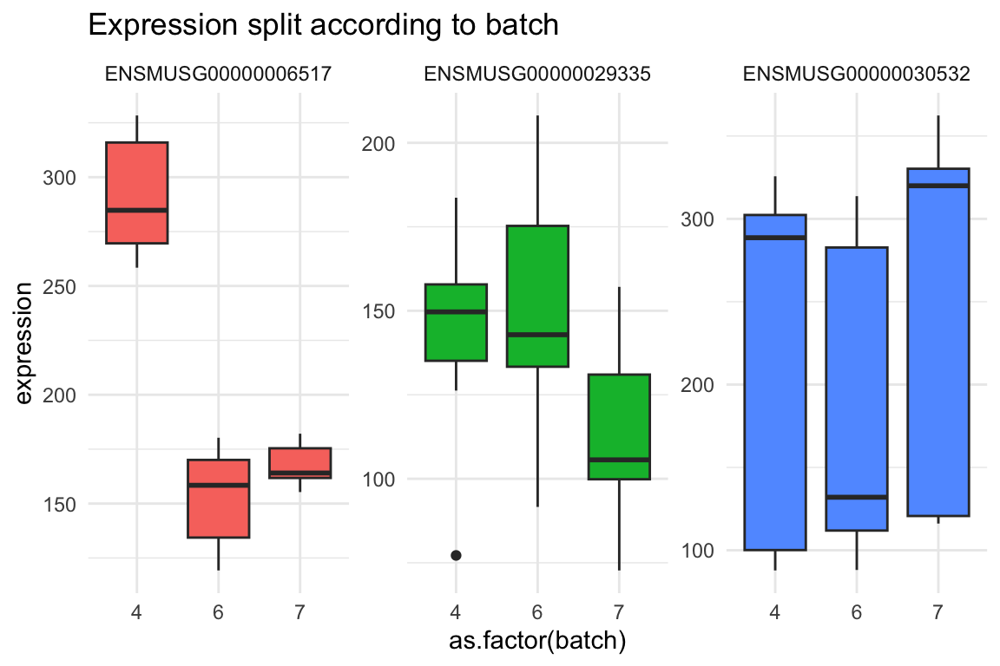
6.6 Problemstillinger
Problem 1) Lav quizzen - “Quiz - tidyverse dag 2”.
Vi øver os videre med datasættet titanic. Indlæs datasættet og udfør oprydning med følgende kode:
library(tidyverse)
library(titanic)
titanic <- as_tibble(titanic_train)
titanic_clean <- titanic %>%
select(-Cabin) %>%
drop_na()Problem 2)
Baseret på titanic_clean datasættet, beregn den gennemsnitlige alder af alle passagerer ombord på skibet.
- I samme kommando, beregn også den maksimale alder og den minimale alder, samt proportionen af passagerer, der er under 18 (for den sidste, se eksempeln med
Pclasstidligere i sektion 6.2.2). Dataframen skal se sådan ud:
## # A tibble: 1 × 4
## mean_alder max_alder min_alder under_18p
## <dbl> <dbl> <dbl> <dbl>
## 1 29.7 80 0.42 0.158Problem 3) summarise() og ggplot().
a) Beregn samme opsummeringsstatistikker som i sidste problemstilling, men brug group_by() for at opdele efter variablen Pclass.
b) Brug din nye dataframe med opsummeringsstatistikker til at lave et søjlediagram med stat="identity" (i stedet for stat="count" som er default / standarden), der viser den gennemsnitlige alder på y-aksen og er opdelt efter Pclass på x-aksen (vær opmærksom på datatypen for Pclass med hensyn til farverne / x-aksen).
c) Anvend pivot_longer() på din dataframe med opsummeringsstatistikker (brug indstillingen cols = -Pclass i funktionen) for at skifte datframen til et long-format baseret på Pclass.
d) Brug venligst din long-format dataframe for at plotte opsummeringsstatistikker. På denne måde, kan man lave plots af alle opsummeringsstatistikker med kun én ggplot kommando. Adskil opsummeringsstatistikerne ved at benytte facet_wrap så du har et plot til hvert statistik og opdele efter Pclass indenfor hvert plot, ligesom i følgende.
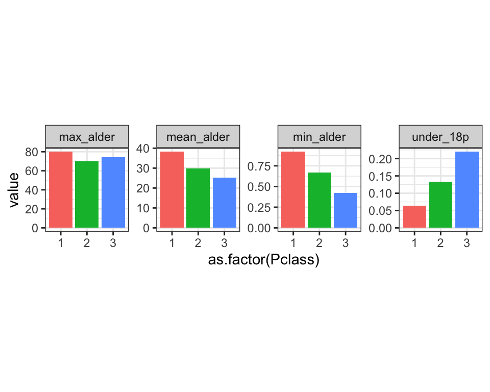
Problem 4) pivot_longer(), pivot_wider() og ggplot().
a) Beregn de samme opsummeringsstatistikker som i Problem 2), men brug group_by() for at opdele efter både variablerne Pclass og Sex først.
- OBS! Du får advarseln at “
summarise()has grouped output by ‘Pclass’ …”, fordi din dataframe stadig betragtes som opdelt efterPclass. Dette skal tages i betragtning, hvis du foretager yderligere beregninger på den. - Brug til sidst
ungroup()på din nye dataframe for at sikre, at den ikke længere er opdelt efter nogen variabel.
b) Brug pivot_longer()-funktionen til at omdanne datasættet til long-formatet med opsummeringsstatistikker i en enkelt kolonne. Nøglekolonnen skal hedde stat, og kolonnen med værdierne skal hedde values.
## `summarise()` has grouped output by
## 'Pclass'. You can override using the
## `.groups` argument.c) Lav et plot af alle opsummeringsstatistikker, som er i long-formatet.
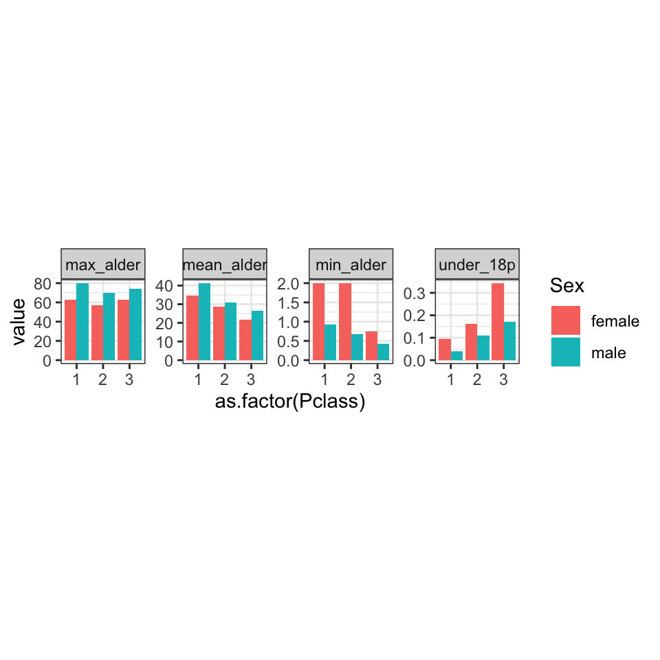
Problem 5) group_by() med tre variabler og summarise().
Prøv en kombination med tre forskellige variabler (vælg selv) indenfor group_by() og brug summarise() til at beregne gennemsnittet af variablen Fare.
- Anvend
ungroup()når du er færdig med at opsummere. - Lav et plot for at visualisere
meanFare. - Idé: som en mulighed, kan man tilføje variabler til
facet_grid(), f.eks.facet_grid(~Var1 + Var2).
Problem 6) pivot_longer().
Opret venligst 2 nye variabler baseret på enten SibSp eller Parch med “yes”-resultatet hvis værdien er større end 0. Brug derefter select() på Fare, Age og dine to nye variabler. Tag det som udgangspunkt for at lave følgende plot:
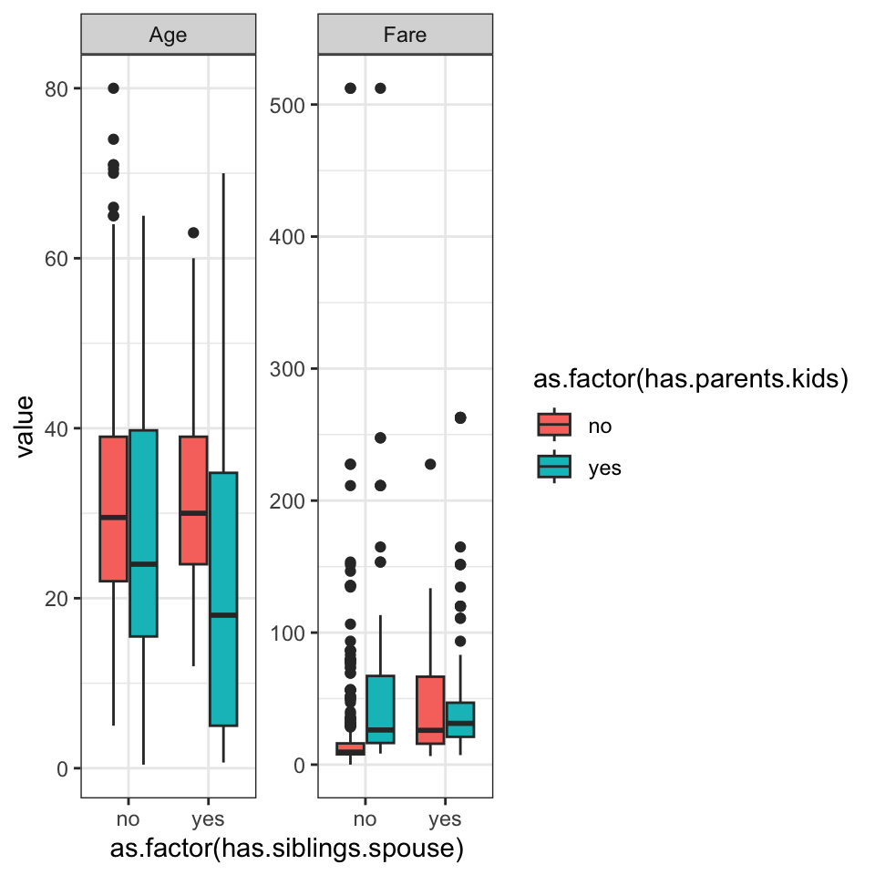
Problem 7) pivot_wider().
Vi vil gerne anvender en tribble, som vi kopierer fra https://r4ds.had.co.nz/index.html. Er dataene i tidy formatet?
people <- tribble(
~name, ~names, ~values,
#-----------------|--------|------
"Phillip Woods", "age", 45,
"Phillip Woods", "height", 186,
"Jessica Cordero", "age", 37,
"Jessica Cordero", "height", 156,
"Brady Smith", "age", 23,
"Brady Smith", "height", 177
)Brug pivot_wider() på people for at skifte datasættet til wide-formatet så at age og height hver har deres egne kolonner.
Problem 8) left_join().
Kør følgende kode med to tribbles:
superheroes <- tribble(
~name, ~alignment, ~gender, ~publisher,
"Magneto", "bad", "male", "Marvel",
"Storm", "good", "female", "Marvel",
"Mystique", "bad", "female", "Marvel",
"Batman", "good", "male", "DC",
"Joker", "bad", "male", "DC",
"Catwoman", "bad", "female", "DC",
"Hellboy", "good", "male", "Dark Horse Comics"
)
publishers <- tribble(
~publisher, ~yr_founded,
"DC", 1934L,
"Marvel", 1939L,
"Image", 1992L
)Vi har to dataframes - superheroes og publishers. Hvilken kolonne kan man bruge til at forbinde de to? Brug left_join() til at tilføje oplysninger fra publishers til dataframen superheroes.
- Får man alle observationerne fra dataframen
superheroesmed i din nye dataframe? Hvis “nej”, hvorfor? - Brug
inner_join()til at forbindepublishersmedsuperheroes- få man så nu alle observationer med denne gang? - Brug
full_join()til at forbindepublishersmedsuperheroes- hvor mange observationer få man med nu? Hvorfor?
Problem 9) left_join().
Kør nedenstående kode inklusive dataframes - iris2 og sample_table. Efter vores ændringer er dataframen iris2 ikke særlig informativ med hensyn til kilden af de forskellige prøver. Men mere oplysningerne findes i sample_table. Brug left_join() til at tilføje sample_table til iris2 for at få en dataframe, som indeholder data og oplysninger om prøverne.
data(iris)
iris2 <- as_tibble(iris)
names(iris2) <- c("sample1","sample2","sample3","sample4","Species")
samp_table <- tribble(
~sample, ~part, ~measure,
#------|-------|--------#
"sample1", "Sepal", "Length",
"sample2", "Sepal", "Width",
"sample3", "Petal", "Length",
"sample4", "Sepal", "Width"
)
iris2 %>%
glimpse()## Rows: 150
## Columns: 5
## $ sample1 <dbl> 5.1, 4.9, 4.7, 4.6, 5.0, 5.4, 4.6, 5.0, 4.4, 4.9, 5.4, 4.8, 4.…
## $ sample2 <dbl> 3.5, 3.0, 3.2, 3.1, 3.6, 3.9, 3.4, 3.4, 2.9, 3.1, 3.7, 3.4, 3.…
## $ sample3 <dbl> 1.4, 1.4, 1.3, 1.5, 1.4, 1.7, 1.4, 1.5, 1.4, 1.5, 1.5, 1.6, 1.…
## $ sample4 <dbl> 0.2, 0.2, 0.2, 0.2, 0.2, 0.4, 0.3, 0.2, 0.2, 0.1, 0.2, 0.2, 0.…
## $ Species <fct> setosa, setosa, setosa, setosa, setosa, setosa, setosa, setosa…## Rows: 4
## Columns: 3
## $ sample <chr> "sample1", "sample2", "sample3", "sample4"
## $ part <chr> "Sepal", "Sepal", "Petal", "Sepal"
## $ measure <chr> "Length", "Width", "Length", "Width"Problem 10) separate().
- Tag udgangspunkt i datasættet
titanic_cleanog brugseparate()til at opdele variablenNamei to variabler,SurnameogRest- Brug
sep=", "for at undgå, at man får et unødvendigt mellemrum lige førRest.
- Brug
- Anvend
separate()en gang til, men for at opdele variablenResti to variabler,TitelogNames. Hvad skal man bedst bruge somsep?- Tip: Brug “\\” foran en punktum.
- Beregn opsummeringsstatistikker for hver
Titel- antal passagerer, gennemsnitsalder, andelen der overlevede og andelen der rejste i første klasse. - Arrangere din nye dataframe efter, hvor mange personer der er for hver
Titel- flest øverst og færrest nederst.
Problem 11) Ekstra pivot_longer().
Åbn datasættet airquality (data(airquality)) og lav venligst følgende plot:
- Husk at tag hensyn til
NAværdier under forberedning af dataene til plottet (f.eks.mean(value, na.rm = TRUE)).
## `summarise()` has grouped output by
## 'Month'. You can override using the
## `.groups` argument.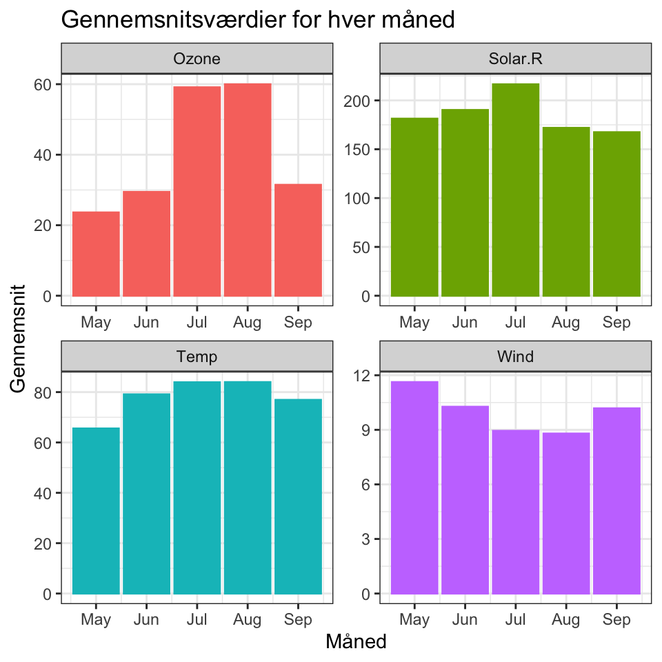
Problem 12)
Åbn table2 (data(table2)) og reshape den til:
## # A tibble: 6 × 4
## country year cases population
## <chr> <dbl> <dbl> <dbl>
## 1 Afghanistan 1999 745 19987071
## 2 Afghanistan 2000 2666 20595360
## 3 Brazil 1999 37737 172006362
## 4 Brazil 2000 80488 174504898
## 5 China 1999 212258 1272915272
## 6 China 2000 213766 1280428583Problem 13)
Tag udgangspunkt i my_tibble:
cause <- rep(c("Communicable diseases","Injuries","Non-communicable diseases"),each=4)
year <- rep(c(1990,2017),times=6)
sex <- rep(c("Female","Female","Male","Male"),times=3)
deaths_millions <- c(7.30,4.91,8.06,5.47,1.41,1.42,2.84,3.05,12.80,19.15,13.91,21.74)
my_tibble <- tibble(cause,year,sex,deaths_millions)Og reshape den til:
- Brug funktionen
unite()fratidyrpakken for at kombineresexogyear. - Find syntaks eksempler til
unite()enten via “?unite” eller online
## # A tibble: 3 × 5
## cause Female_1990 Female_2017 Male_1990 Male_2017
## <chr> <dbl> <dbl> <dbl> <dbl>
## 1 Communicable diseases 7.3 4.91 8.06 5.47
## 2 Injuries 1.41 1.42 2.84 3.05
## 3 Non-communicable diseases 12.8 19.2 13.9 21.7Problem 14)
Valgfri ekstra: Lav en ny dataframe med alle passagerer på skibet titanic, der hedder “Alice” eller “Elizabeth”.
- Se venligst online hvis
stringrpakken kunne tilbyde muligheder at løse opgaven.
6.7 Ekstra links
Cheatsheet: https://github.com/rstudio/cheatsheets/blob/master/data-import.pdf